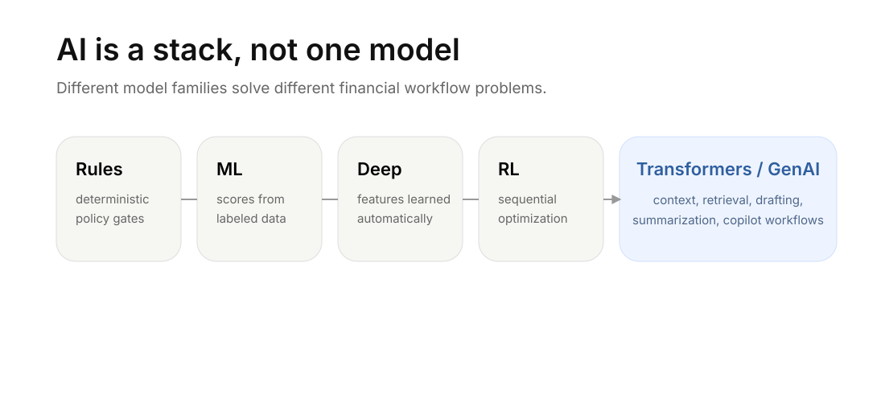

What Counts as AI in Markets?
A practical taxonomy from rule engines and statistical models to transformer copilots for brokerage, trading, and risk workflows.

AI is not one thing. In financial markets, the word gets used for everything from a deterministic restricted-list rule to a language model that drafts a risk memo. That ambiguity is dangerous. If we do not know what kind of AI we are using, we will not know what it can do, where it fails, or how much control it needs.
A better way to think about AI is as a stack of methods for turning information into decisions, scores, actions, or generated content. Each layer has a different mathematical core and a different operational boundary.
Practical thesis: the right question is not “Should we use AI?” The right question is “What type of AI fits this workflow, what should it be allowed to decide, and what must remain under human or rules-based control?”
Rules still do work that models should not touch
The oldest form of AI in markets is not a chatbot. It is a rule engine. A rule engine evaluates explicit if-then conditions over known facts.
Examples are everywhere in brokerage infrastructure: restricted-list checks, order-entry eligibility, risk thresholds, surveillance lexicons, margin-call routing, and client-service workflow triggers. A rule might say: if a symbol is under a trading halt, reject new buy orders; if account equity falls below maintenance requirement, flag margin deficiency; if a message contains prohibited promissory language, route it to review.
For a broker, rule systems are valuable because they are deterministic and auditable. You can show the rule, explain when it fired, and document who changed it. Their weakness is that they do not generalize. A rule can catch exactly what you wrote; it cannot understand a new manipulation pattern, sarcasm in a message, or a subtle change in trader behavior.
For a trader, rules still matter. A stop-loss rule, max-position rule, no-trade window before an event, or “do not trade illiquid names” rule is not glamorous, but it is often more valuable than a sophisticated model. The first layer of personal trading AI should usually be rules that prevent bad behavior.
Machine learning is useful when feedback exists
Statistical ML learns a mapping from input features to an output. The output can be a probability, score, category, ranking, forecast, or anomaly flag. Unlike rules, the relationship is learned from data.
In a brokerage, ML fits workflows where labels exist and feedback is measurable: fraud scoring, churn prediction, document classification, trade-surveillance prioritization, call-volume forecasting, alert deduplication, and case triage. A fraud model can learn nonlinear relationships between device behavior, transfer amount, IP mismatch, failed login patterns, and account history.
But ML is not judgment. A model can rank risk; it cannot independently prove suitability, fairness, or compliance. A high fraud score says “review this now,” not “this client is guilty.” A high trade-risk score says “the exposure deserves attention,” not “force liquidation without policy.”
For a trader, ML is useful for ranking and filtering: which symbols have unusual volume, which futures contracts have abnormal realized volatility, which macro events have historically moved an asset, or which watchlist names deserve deeper review. It is much less safe as an isolated buy/sell oracle.
Deep learning helps with messy information
Traditional ML depends heavily on handcrafted features. Deep learning can learn intermediate representations automatically. This matters for messy financial data: emails, voice transcripts, PDFs, news articles, images, app behavior, and long event histories.
For brokers, deep learning can make unstructured data tractable. It can help process client communications, extract fields from documents, transcribe calls, identify anomalous behavior, or classify support tickets. The cost is opacity. Deep models are often harder to explain locally, more data-hungry, and more vulnerable to drift.
For traders, deep learning can help structure information that is too large to read manually: earnings-call transcripts, news flows, filings, macro commentary, or social sentiment. The safe use is not “the neural net told me to buy.” The safer use is “the model helps me organize and compare signals so I can make a better decision.”
Reinforcement learning is about sequences, not opinions
Reinforcement learning learns policies: what action to take in a state to maximize reward over time. That is why it is attractive for execution, routing, hedging, market making, and resource allocation. The decision is not one static prediction; it is a sequence.
The danger is reward design. If the reward is incomplete, the agent can optimize the wrong thing. An execution model that only rewards low transaction cost may increase market impact in subtle ways. A fraud-escalation policy that rewards fewer false positives may allow more fraud. A trader’s agent that rewards short-term P&L may learn leverage and concentration habits that fail in tail events.
For a broker, RL belongs only in tightly scoped, heavily simulated, strongly monitored workflows. For an individual trader, RL should usually remain research or paper trading unless the guardrails are extremely conservative.
Generative AI is strongest as a language and context layer
Transformers are powerful because they learn which parts of an input should attend to which other parts. This makes them useful for language, sequence reasoning, summarization, retrieval, and multi-document context. A transformer can understand that “earnings beat” may be less important than “guidance cut” in the same headline.
Generative AI adds another capability: it can produce new language. In markets, that means drafting notes, summarizing alerts, explaining policy, converting raw data into readable narratives, and helping analysts navigate research. Retrieval-augmented generation, or RAG, improves this by grounding output in selected source documents instead of model memory alone.
For a brokerage, the ideal early GenAI workflow is not autonomous decision-making. It is controlled drafting and retrieval: summarize this alert, cite the policy, explain the exposure, list missing evidence, and route the case to a human reviewer.
For a trader, GenAI is useful as a research assistant: summarize news, compare catalysts, build a trade journal, stress test a position, write a checklist, or explain what could invalidate a thesis. The model should assist thinking, not replace it.
For brokers, the layers should stay separate
Brokerage AI should be layered. Rules enforce hard boundaries. ML prioritizes risk. Deep learning structures unstructured data. Transformers retrieve and summarize. Generative AI drafts and explains. Humans retain accountability for judgment, client communication, policy interpretation, and high-stakes action.
That architecture is slower than saying “let the AI decide,” but it is much safer. A broker operates inside supervision, recordkeeping, communications, market integrity, privacy, and client-protection obligations. The AI system needs to produce outputs that can be reviewed, challenged, logged, and explained.
For traders, the best first use is decision support
A trader can build useful AI without building an autonomous trading robot. The highest-return first step is usually a personal decision-support layer: a watchlist monitor, a news and filing summarizer, a position-risk dashboard, a trade journal, a scenario generator, and a rules layer that blocks impulsive or oversized trades.
The trader should treat AI like a junior analyst with speed, not a portfolio manager with authority.
For builders, the task comes before the model
For product managers, engineers, quants, risk analysts, and compliance teams, the workflow should start with model-task matching. The first question is not which model is fashionable. The first question is what kind of work is being done: deterministic policy, prediction, classification, language drafting, calculation, or sequential action.
Once that is clear, the next questions become practical. What source of truth is allowed? What output can be validated? What action can the system influence? Who owns the final decision? A model choice made before those questions is usually a guess.
The professional takeaway
AI literacy is becoming financial literacy. Even outside finance, the same pattern applies: use rules for non-negotiable boundaries, models to prioritize, language systems to summarize and draft, and human review where the cost of being wrong is high.
The practical skill is knowing when fluency is enough and when control is required. In markets, fluency is never enough by itself.
Takeaway
AI is not a governance-free layer added on top of a financial workflow. It is a set of tools with different mathematical cores and different failure modes. The safest systems combine them deliberately: rules for hard limits, models for pattern detection, retrieval for source grounding, language generation for synthesis, and human review for accountability.